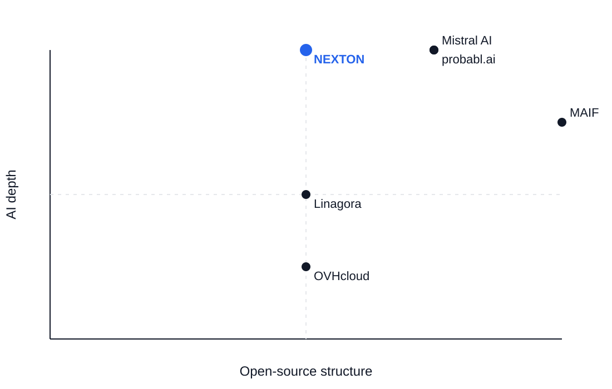

Why NEXTON publishes open source
We build AI systems in the real world, and we choose to open what matters.
Why open source?
Open source is the viable infrastructure of modern artificial intelligence.
The most important AI systems rely on open dynamics. Not as an ideology, but as a necessity. Complex systems require transparency, iteration and collective scrutiny.
A technical civilization often needs a resource that is abundant, accessible and shareable. For software, and now for AI, that resource is the commons.
At NEXTON, we see open source as a technical necessity, a strategic lever and a cultural commitment.
We do not publish code for communication. We build systems that can be understood, reused and improved.
Why in France?
France and Europe do not lack talent, rigor or scientific tradition.
For years, the pattern has been the same. Technologies are designed elsewhere, industrialized elsewhere at scale, and then adopted in Europe.
In that model, Europe cannot resign itself to becoming only a space of consumption and regulation, relegated to the status of a suburb of the digital world.
We reject that trajectory.
Artificial intelligence changes the economics of software production. With stronger tools, more automation and augmented engineers, it becomes possible to produce more locally with smaller and more expert teams.
For a long time, software production was structured by geographic labor arbitrage. When technical leverage increases, that arbitrage becomes less central. What matters more is quality, context, responsibility and the ability to turn work into durable assets.
Building in France and in Europe becomes possible again. In that context, open source helps create commons, structure local capability and participate actively in shaping AI.
A still under-occupied space
Some actors are highly structured in open source but less centered on AI. Others are strong in AI but do not operate a visible, structured open-source strategy. Very few combine both with real production experience.
NEXTON positions itself in that space, at the intersection of AI engineering, real systems and reusable commons.

Our position
We build AI systems in the real world and choose to open part of that work.
Because it improves quality. Because it attracts the right people. Because it contributes to a stronger ecosystem.
And because we would rather build than merely endure.